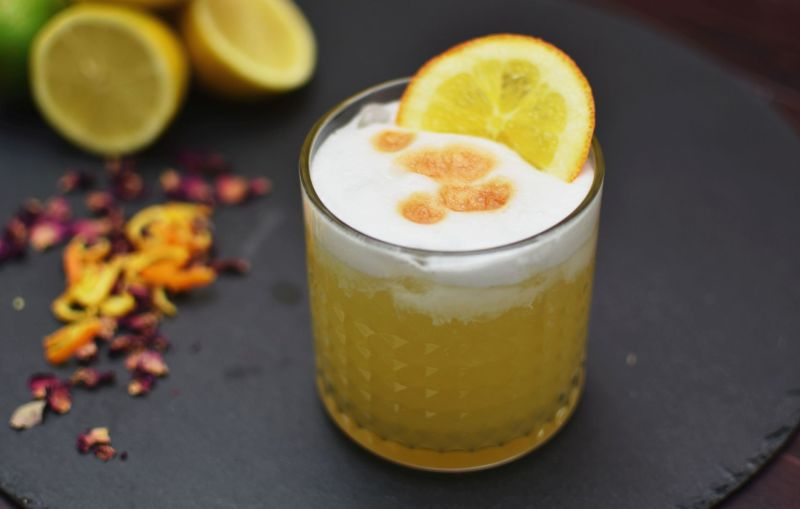

The Whiskey Sour

Description
Do you enjoy whiskey? Do you enjoy sour foods? Do you enjoy cleaning your cocktail shaker? It's a match!
Things you'll need
- 1 cup (lowball or highball glasses work well here, but so does your daily driver)
- 1 cocktail shaker
- 2-3 ice cubes (optional)
Ingredients
- 2oz whiskey
- 1oz lemon juice
- 1oz simple syrup
- 1 orange peel and/or cocktail cherry (optional)
Steps
- Pour the whiskey, lemon juice, and simple syrup into the cocktail shaker
- Optionally add your ice cubes to the shaker
- Tightly close the shaker and shake until cold (if you added ice) or until you get bored
- Strain the mixture into the cup
- Optionally garnish with the orange peel and/or cocktail cherry